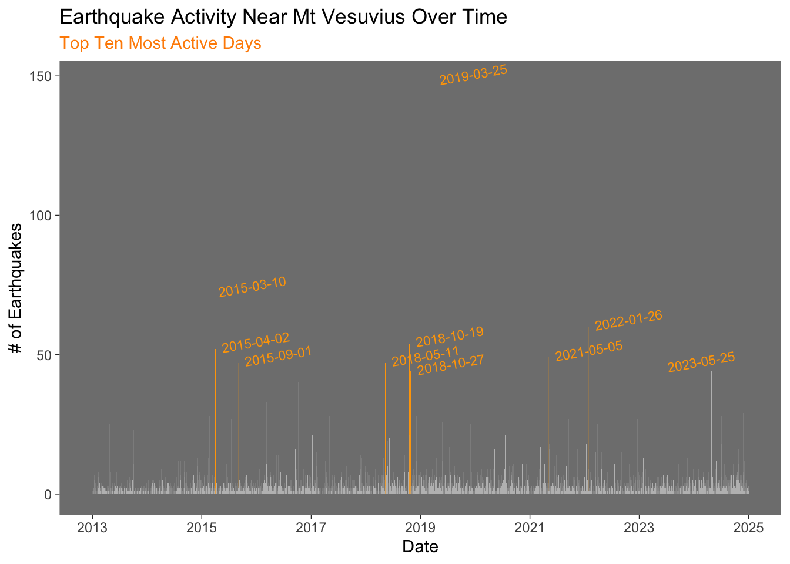
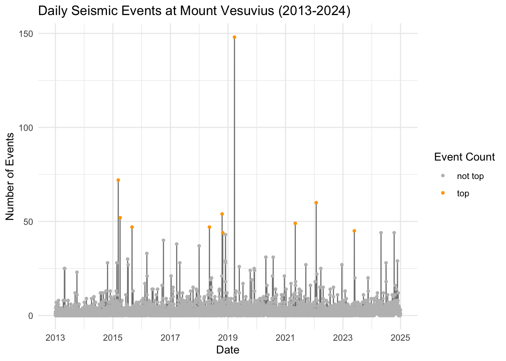
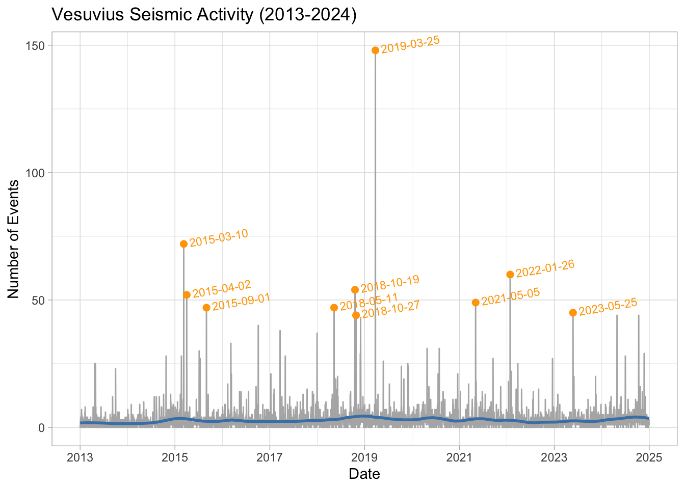
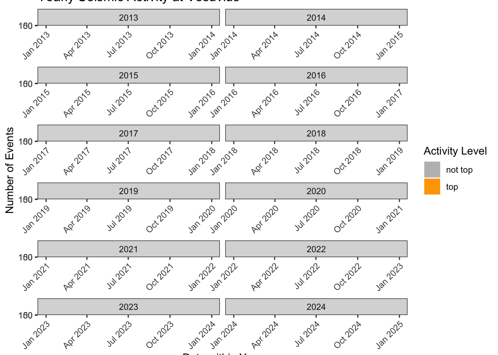
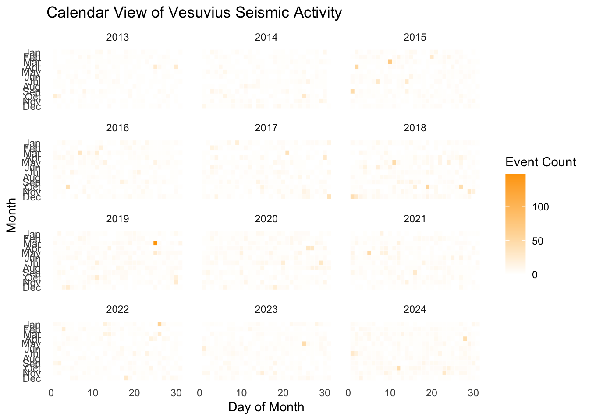

Recently, I have been playing with AI tools, trying out different ways of integrating them into my workflow. My most comfortable environment is using the RStudio IDE, Quarto, and the tidyverse to wrangle data and build plots to tell a story. After quite a bit of trial and error, I landed on the following additions to this setup:
Ellmer for programmatic access to the LLM (Claude-3-7-Sonnet)
The btw package for supplementing prompts with information about my active R environment
An Anthropic API key with $5 in an account
As with any new tool, the best way to know if it is useful is to try to use it to solve problems.
So, I picked up the latest Tidy Tuesday dataset and did some Exploratory Data Analysis (EDA). I didn’t start with the LLM right away though. I am pretty quick at exploring data with the tidyverse and building plots using ggplot2. So, I used my normal workflow (non-AI-assisted) to decide what I wanted to convey with my plot and get to iterating.
And this is where I hit a familiar problem. There are endless options for tweaking plots, and with even a dash of perfectionist tendency, you can get stuck making endless minor adjustments. After trying my tenth different combination of height/width ratio, I asked the LLM for help breaking out of this cycle.
I pointed it to my code and prompted: “give me four different versions of this plot.” It responded within about 10 seconds and it took me a minute or two to review the results.
Show the code
library(tidyverse)library(ggtext)# Grab data from GHvesuvius <- readr::read_csv('https://raw.githubusercontent.com/rfordatascience/tidytuesday/main/data/2025/2025-05-13/vesuvius.csv') |>select(-type, -area) |># is always "earthquake" and "Mount Vesuvius" mutate(time_unix = time -ymd_hms("1970-01-01 00:00:00"),obs_day =as.Date(time)) |>filter(obs_day >=ymd("2013-01-01")) # data is very sparse before this# Fill in missing datesall_days <-tibble(obs_day =seq.Date(from =ymd("2013-01-01"), to =ymd("2024-12-31"), by ="day") )# for date breaksbreaks <-as.Date(ymd(c("2013-01-01",#"2014-01-01", "2015-01-01",#"2016-01-01","2017-01-01",#"2018-01-01","2019-01-01",#"2020-01-01","2021-01-01",#"2022-01-01","2023-01-01",#"2024-01-01","2025-01-01")))# Aggregated statsvesuvius_agg <- vesuvius |>summarize(n =n(),.by = obs_day) |>right_join(all_days, by ="obs_day") |>mutate(n =replace_na(n,0)) |>arrange(desc(n)) |>mutate(top_ten =case_when(row_number() <=10~"top",row_number() >10~"not top"))# set up our colorspop_color <-"orange"color_list <-c("top"= pop_color,"not top"="grey")daily_plot <- vesuvius_agg |>ggplot(aes(x = obs_day, y = n)) +geom_col(aes(fill = top_ten)) +geom_text(data =~filter(.x, top_ten =="top"), aes(label = obs_day),size =3,hjust =-.1,angle =10,color = pop_color) +scale_fill_manual(values = color_list) +theme_dark() +labs(y ="# of Earthquakes",x ="Date",title ="Earthquake Activity Near Mt Vesuvius Over Time",subtitle ="<span style = 'color: DarkOrange;'>Top Ten Most Active Days</span> ",alt ="A bar plot of with the number of daily earthquakes near Mt. Vesuvius from 2013 to 2025. The top ten most active days are colored orange and they range from about 50 earthquakes to about 150 earthquakes. The rest of the days are in grey and they are much lower, mostly around 1 or 2.") +scale_x_date(breaks = breaks,date_labels ="%Y") +theme(panel.grid.minor =element_blank(),panel.grid.major =element_blank(),plot.subtitle = ggtext::element_markdown()) +guides(fill ="none")daily_plot

My Original Plot
Results
Three of the AI-generated plots were time series plots very similar to mine. One added a kernel density, one other removed some text labels, and the third one faceted the time series by year.
The fourth AI-generated plot was a calendar heatmap. It didn’t strike me as promising, but I appreciated that it was different.
Four AI-Generated Variations
Below I tried to keep the raw AI results intact as much as possible. I did some formatting so that they did display similarly to what I saw when I initially ran them in the RStudio IDE.
Version 1: Basic Time Series Plot of Daily Seismic Events
Show the code
# Version 1: Basic time series plotdaily_plot_v1 <-ggplot(vesuvius_agg, aes(x = obs_day, y = n)) +geom_line(color ="grey50") +geom_point(aes(color = top_ten), size =1) +scale_color_manual(values = color_list) +scale_x_date(breaks = breaks, date_labels ="%Y") +labs(title ="Daily Seismic Events at Mount Vesuvius (2013-2024)",x ="Date", y ="Number of Events",color ="Event Count") +theme_minimal()daily_plot_v1

Version 2: Enhanced Time Series with Highlighted Periods and Smoother
Show the code
# Version 2: Enhanced with smoother and highlighted periodsdaily_plot_v2 <-ggplot(vesuvius_agg, aes(x = obs_day, y = n)) +geom_line(color ="grey70") +geom_smooth(method ="loess", span =0.1, se =FALSE, color ="steelblue") +geom_point(data =subset(vesuvius_agg, top_ten =="top"), aes(color = top_ten), size =2) +scale_color_manual(values = color_list) +geom_text(data =~filter(.x, top_ten =="top"), aes(label = obs_day),size =3,hjust =-.1,angle =10,color = pop_color) +scale_x_date(breaks = breaks, date_labels ="%Y") +labs(title ="Vesuvius Seismic Activity (2013-2024)",x ="Date", y ="Number of Events") +theme_light() +theme(legend.position ="bottom",plot.subtitle = ggtext::element_markdown()) +guides(color ="none")daily_plot_v2

Version 3: Faceted Plot by Year with Density Ridges
Show the code
# Version 3: Faceted by year with summarized datadaily_plot_v3 <-ggplot(vesuvius_agg, aes(x = obs_day, y = n)) +geom_col(aes(fill = top_ten), width =1) +scale_fill_manual(values = color_list) +facet_wrap(~format(obs_day, "%Y"), scales ="free_x", ncol =2) +labs(title ="Yearly Seismic Activity at Vesuvius",x ="Date within Year", y ="Number of Events",fill ="Activity Level") +theme_bw() +theme(axis.text.x =element_text(angle =45, hjust =1))daily_plot_v3

Version 4: Heatmap Calendar View
Show the code
# Version 4: Calendar heatmap view# Create year and month variablesvesuvius_agg_cal <- vesuvius_agg %>%mutate(year = lubridate::year(obs_day),month = lubridate::month(obs_day),day = lubridate::day(obs_day) )daily_plot_v4 <-ggplot(vesuvius_agg_cal, aes(x = day, y = month, fill = n)) +geom_tile(color ="white", size =0.1) +scale_fill_gradient(low ="white", high = pop_color) +facet_wrap(~ year, ncol =3) +scale_y_continuous(breaks =1:12,labels = month.abb,trans ="reverse") +labs(title ="Calendar View of Vesuvius Seismic Activity",x ="Day of Month", y ="Month",fill ="Event Count") +theme_minimal() +theme(panel.grid =element_blank())daily_plot_v4

Lots of Small Changes
I knew that LLMs were non-deterministic and to be ready for possibly wild results. But, what I hadn’t considered was that it would also make a lot of smaller, somewhat arbitrary changes. Some examples:
The label “# of Earthquakes” became “Number of Events”
The title “Earthquake Activity Near Mt Vesuvius Over Time” became “Vesuvius Seismic Activity (2013-2024)” or “Daily Seismic Events at Mount Vesuvius (2013-2024)”
It summarily dropped the Alt Text label
The most helpful result: One of the LLM-generated time series plots added points to the observations I wanted to highlight, and they looked nice. In my version, I used color and had a text callout but not points. A small change, but I liked it.
One Funky Code Smell
I actually ran the prompt a couple of times and the results were fairly similar each time with one exception: one version wrapped each of the plot objects in a function call. This is a fine practice in general, but the LLM made the strange choice of adding library calls inside of each function.
The sneaky thing about this is that the code will run, but it’s not a pattern any seasoned R programmer would recommend. A new R programmer, though, might be tripped up.
More than anything, this was a reminder to be skeptical of the LLM output, especially when doing tasks that aren’t yet part of your expertise. In those cases, returning to documentation you trust could be a good way to check any LLM-generated patterns that look suspect.
Making Good Choices
Upon reflection, a few of the choices I made for this project made it likely to succeed:
I chose an area that I already know well - Tidyverse wrangling and ggplot are my bread and butter. So, I was able to quickly evaluate what the LLM came up with. I could also make changes to it, knowing that I could fix anything that broke without too much trouble.
The most obvious, lowest risk way to use AI (and to get a sense of how good it is in areas that matter to you) is to ask it for second opinions in your area of expertise.
I chose a task that was verifiable - asking it to generate code meant that I could run the code to test it.
With code, you can integrate the result into your existing product. With writing that can be harder.
I chose a task that was scoped - by the time I pulled in the LLM, I already knew the point I wanted to convey. I was looking for options to convey it.
Relatedly, I limited the number of turns with the LLM. I took what the LLM had to offer with some limited prompting and then got back to my normal workflow.
I configured my environment before starting - I used the Ellmer and btw packages to make it easy to give the LLM my full context.
I spent a whole lot of time researching different workflows and setups. This could be another set of posts and I will link below to resources that I used to do this.
Interacting with LLMs programmatically—rather than through a chat interface or as code completion—provides deeper insight into both the challenges and the possibilities.
What’s Next
I am looking to grow as a Python programmer, and I wonder how well AI can assist in an area where I don’t have quite the same fluency. The packages and plugins I used here (Ellmer and btw) are R-specific, so I will try different Python-specific options.
I have been playing with Continue writing Python in the Positron IDE and have had good results. One feature I like is that the Continue plugin presents code changes as actual diffs for you to accept or reject rather than immediately writing over your code.
I have an inkling that change management is important since the LLM makes it easy to generate new code and edit existing code. It will be useful to be able to get back to a state where you know things work. I would like to try using a more deliberate git strategy to help here: frequent commits and a willingness to revert. While this would be adding yet another technology to the mix, git is very mature and I am pretty comfortable with it.